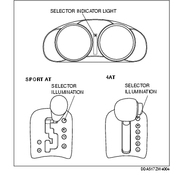

Transaxle range (TR) switch inspection [FN4A-EL]
Operating Inspection
1. Verify that the starter operates only when the ignition switch is turned to the START position with the selector lever in P or N position.
2. Verify that the back-up lights illuminate when shifted to R position with the ignition switch at the ON position.
3. Verify that the positions of the selector lever and the indicator are aligned.

Continuity Inspection
- • Water or foreign objects entering the connector can cause a poor connection or corrosion. Be sure not to drop water or foreign objects on the connector when disconnecting it.
1. Disconnect the negative battery cable.
2. Remove the fresh-air duct. (See INTAKE-AIR SYSTEM REMOVAL/INSTALLATION [ZY].)
3. Disconnect the TR switch connector.

4. Verify continuity as indicated in the table.


5. Reinspect for continuity at TR switch.
- • If there is any malfunction, replace the TR switch. (See TRANSAXLE RANGE (TR) SWITCH REMOVAL/INSTALLATION [FN4A-EL].)
6. Connect the TR switch connector.
7. Install the fresh-air duct. (See INTAKE-AIR SYSTEM REMOVAL/INSTALLATION [ZY].)
8. Connect the negative battery cable.
Resistance Inspection (On-Vehicle Inspection)
- • Water or foreign objects entering the connector can cause a poor connection or corrosion. Be sure not to drop water or foreign objects on the connector when disconnecting it.
1. Disconnect the negative battery cable.
2. Remove the fresh-air duct. (See INTAKE-AIR SYSTEM REMOVAL/INSTALLATION [ZY].)
3. Disconnect the TR switch connector.

4. Measure the resistance between the following terminals.

- • If there is any malfunction, inspect the ground, then perform the operating inspection.
Transaxle range (TR) switch
5. Connect the TR switch connector.
6. Install the fresh-air duct. (See INTAKE-AIR SYSTEM REMOVAL/INSTALLATION [ZY].)
7. Connect the negative battery cable.